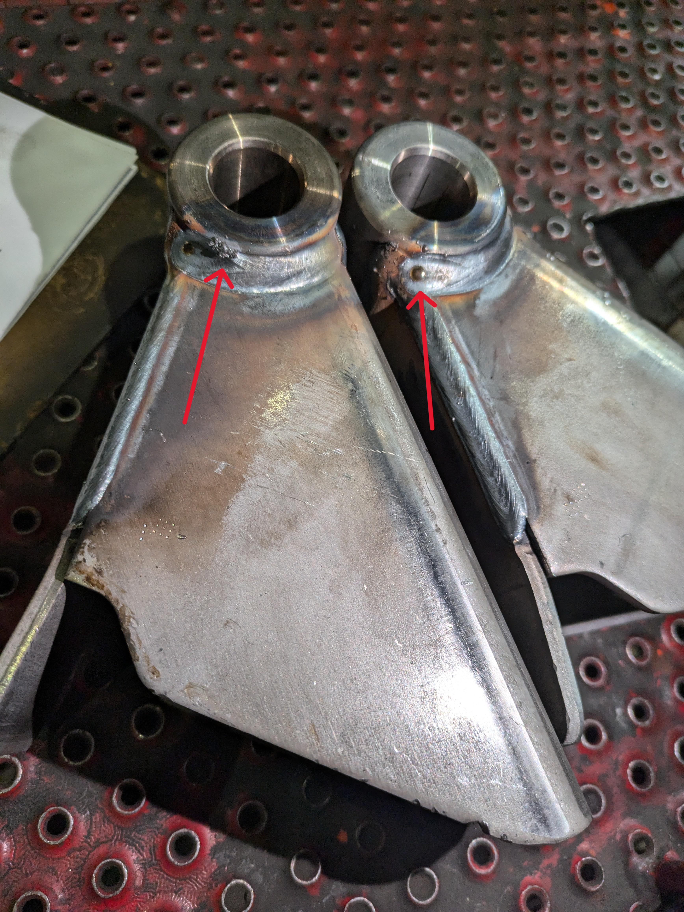

Projects

Paint Line Thermal Process Optimization
Problem
- Powder coat cure performance on large chassis assemblies was inconsistent due to non-uniform heating across parts with varying thermal mass.
- Resulted in repeated out-of-spec conditions and constrained oven throughput.
Approach
- Instrumented representative chassis components using multi-point dataloggers and conducted 20+ validation trials to characterize thermal response.
- Classified components into thermal families based on empirically observed heat-up behavior.
- Redesigned oven load configurations to better align cure strategy with part thermal characteristics.
Results
- Improved cure compliance from 0% to >80% under validated test conditions.
- Demonstrated an approximate 21-minute reduction in cure cycle time per vehicle through grouping like parts.
- Established a repeatable, data-driven thermal validation framework to support future process optimization.
Focus: Thermal profiling, manufacturing throughput, data-driven process optimization

Vehicle Assembly Standardization & Quality Documentation
Problem
- Low-volume vehicle assembly relied heavily on tribal knowledge, resulting in inconsistent build execution and difficulty incorporating engineering changes.
- Lack of standardized documentation increased risk during handoffs between engineering, quality, and production.
Approach
- Developed standardized assembly work instructions to capture the intended build sequence and critical checks.
- Created quality test procedures to support functional validation and leak testing at key assembly stages.
- Refined documentation iteratively based on production feedback and evolving engineering requirements.
Results
- Established a standardized, repeatable assembly process suitable for low-volume vehicle production.
- Reduced reliance on tribal knowledge by capturing build intent, inspection points, and test requirements in formal documentation.
- Improved cross-functional alignment between engineering, quality, and production for future builds and revisions.
Focus: Process standardization, documentation, production readiness

Manufacturing Defect Root Cause Investigation
Problem
- A sudden increase in weld defects negatively impacted quality performance and production stability.
- The root cause was not immediately apparent, requiring structured investigation across shifts.
Approach
- Analyzed quality data trends to identify defect patterns and isolate affected components.
- Conducted on-floor root cause analysis with production teams across multiple shifts.
- Implemented targeted corrective actions and monitored post-fix performance.
Results
- Achieved a sustained 100% elimination of the recurring weld defect over multiple production days.
- Improved communication and alignment between quality and production teams during issue resolution.
Focus: Root cause analysis, manufacturing quality, cross-functional collaboration
Automated Defect Tracking System (VBA)
Problem
- Defect tracking relied on paper forms and manual Excel entry, creating delays and transcription errors.
- Lack of real-time visibility limited timely response to emerging quality issues.
Approach
- Designed and implemented an Excel VBA-based defect tracking system with a custom UserForm interface.
- Automated data validation, database population, and defect categorization.
- Enabled direct operator input at the workstation, eliminating duplicate manual entry.
Results
- Reduced defect data entry and processing time by approximately 50%.
- Improved data accuracy by removing manual transcription steps.
- Enabled real-time defect visibility for quality staff and management.
Focus: Automation, data integrity, manufacturing efficiency

Chemical Product Design & Process Development
Problem
- Design and production of a consumer chemical product required balancing formulation performance, process control, and quality constraints.
Approach
- Selected materials and developed a soap formulation through iterative testing and refinement.
- Collaborated in a team-based environment to progress from concept to final product.
Results
- Successfully produced a functional final product meeting defined project requirements.
- Demonstrated end-to-end product development, from formulation design to controlled production.
Focus: Chemical engineering fundamentals, product design, process development
Experience
Quality Engineer
Optimized the paint line and reduced defects, standardized assembly procedures, and created PPAP/FA submissions and inspection specifications.
Propulsion Team Member
Working on the propulsion sub-team and helping conduct various testing to support propulsion system development.
Quality Assurance
Led quality iniatives by eliminating defects, automating tracking systems, inspecting parts, and managed Non-Conformance Reports.
Mechanical Team Member
Designed various components for the e-scooter using Solidworks while referencing KiCAD schematics and Solidworks files.
Education
BASc, Chemical Engineering - University of Waterloo
Relevant coursework: Chemical Engineering Concepts I & II, Chemical Engineering Design Studio I & II.
Academic Achievements
- Excellent Academic Standing (>80%) across all terms.
- President's Scholarship - $2,000
Project Title
Problem
The weld cell production line for scissor levels in Skyjack machines lacked an efficient defect tracking system. Each scissor level variant had a unique part number due to slight differences, requiring detailed documentation of part numbers, defect types, and other specifications. The existing process was manual and time-consuming: 1. Welders documented defects on paper 2. Paper forms were handed off for data entry 3. Data was manually typed into Excel spreadsheets at the end of each shift This two-step process created delays and increased the risk of transcription errors. The inefficient workflow consumed valuable production time and made it difficult to quickly analyze defect trends or respond to quality issues since data was entered only at the end of each shift.
Solution
I developed an automated defect tracking system using Excel VBA that completely transformed the data entry workflow. The solution centered around a custom UserForm interface that featured images of all the different scissor level types, allowing welders to visually identify and select the correct part rather than manually entering part numbers. The form was designed to be intuitive and user-friendly, with dropdown menus and visual aids that made data entry straightforward even for those who weren't comfortable with traditional spreadsheet interfaces. Behind this interface, I programmed a macro that automatically captured all the form data and populated the Excel database without any manual typing required. This meant that welders could now input defect information directly into the system at their workstations, completely bypassing the paper-based intermediate step. The system validation built into the form also helped prevent common data entry errors, such as incorrect part numbers or missing required fields.
Results
The new automated system reduced the total time required for defect data tracking by 50%, delivering immediate improvements to our quality control process. By eliminating the paper handoff step between welders and data entry personnel, we removed a significant bottleneck from the workflow and enabled real-time defect tracking. The intuitive UserForm interface proved to be considerably faster than manual typing, and welders reported that the visual part selection made it easier to ensure they were documenting the correct information. Beyond the time savings, the system dramatically improved data accuracy by removing the transcription step where errors may frequently occur. The automation freed up substantial staff time that could be redirected toward higher-value quality control activities, such as analyzing defect patterns and implementing corrective actions. Management gained the ability to access up-to-date defect data instantly rather than waiting for manual entry to be completed, enabling faster decision-making and more responsive quality management across the production line.